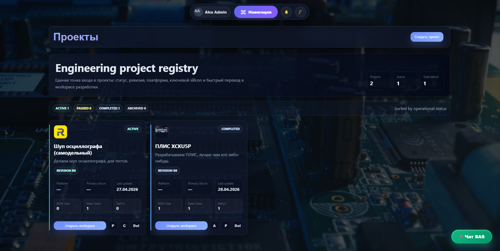
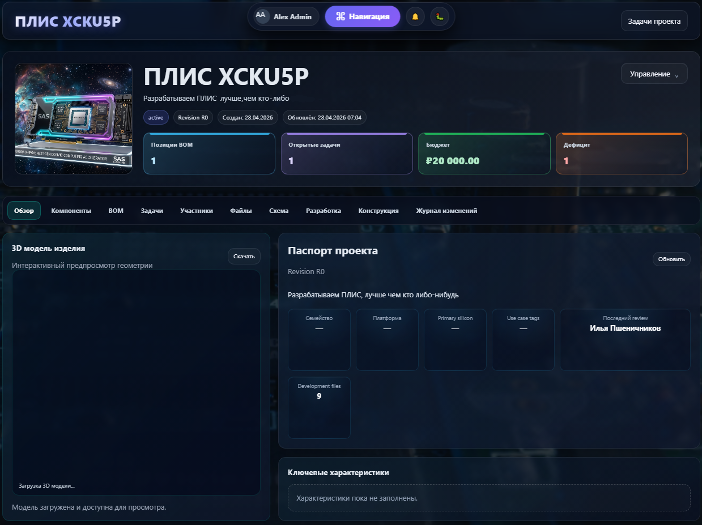
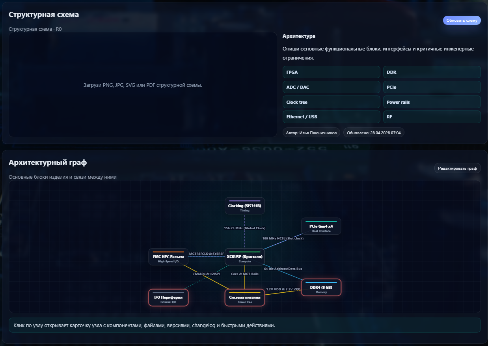
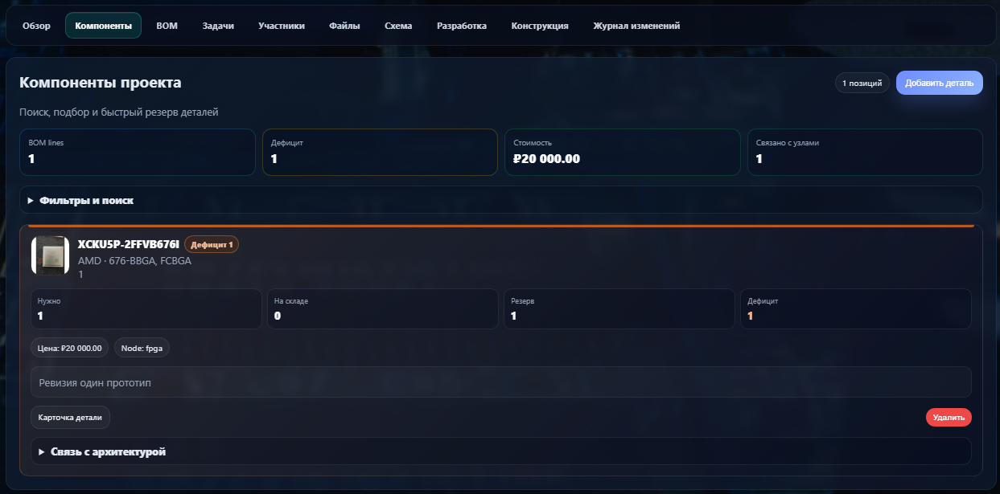
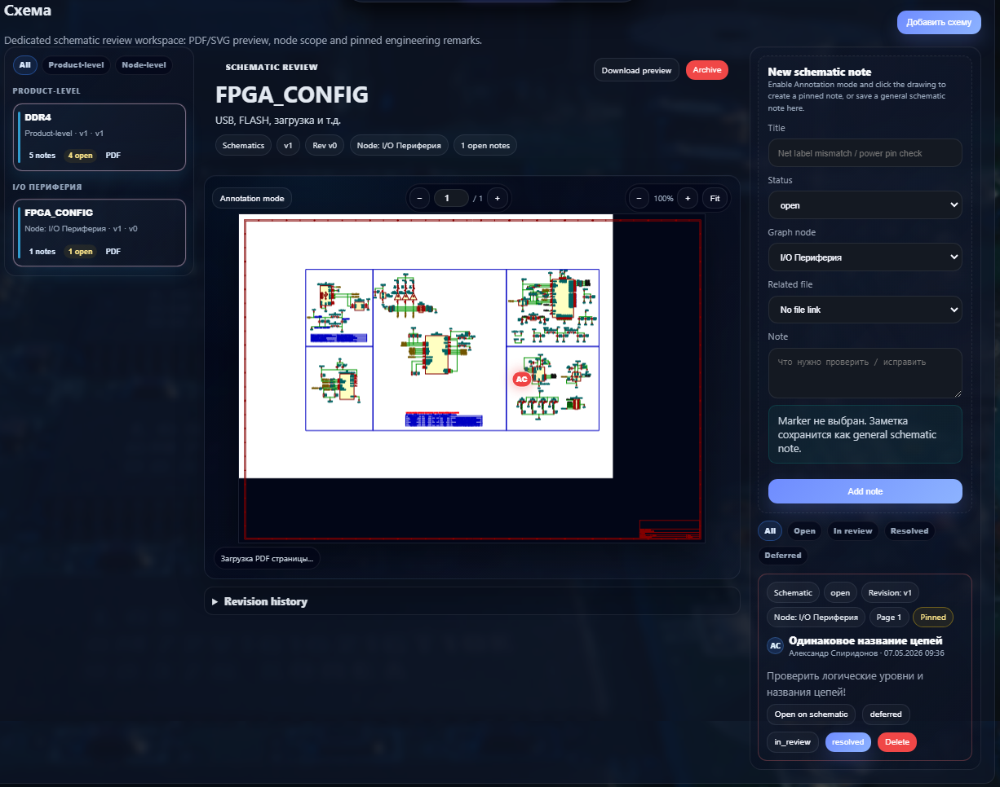
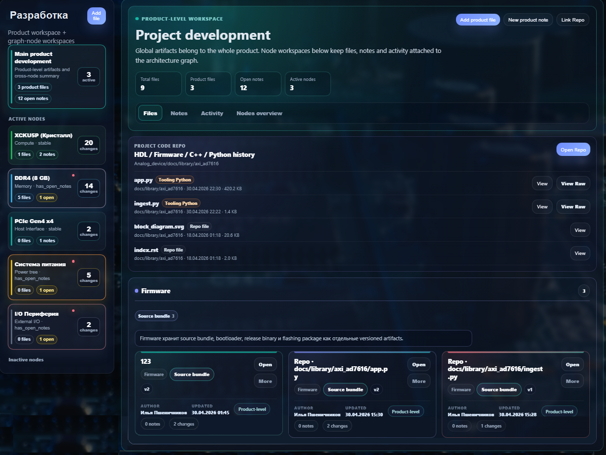

Проекты¶
Раздел Проекты предназначен для создания и управления инженерными проектами. Он объединяет сведения о проектах, их компонентах, документации, схемах, задачах и материалах разработки.
Реестр проектов¶
После открытия раздела Проекты отображается реестр доступных проектов.
В верхней части страницы расположена кнопка Создать проект, которая запускает процесс создания нового проекта.
Реестр содержит сводную информацию о проектах:
- общее количество проектов;
- количество активных проектов;
- суммарный дефицит компонентов по всем проектам.
Для каждого проекта отображается карточка с основной информацией:
- название и описание;
- статус проекта;
- платформа;
- основной silicon (Primary silicon);
- дата последнего обновления;
- количество позиций BOM;
- количество открытых задач;
- дефицит компонентов.

Реестр проектов.
Управление проектами в реестре¶
Для управления проектами предусмотрены следующие действия:
- Открыть workspace — перейти в рабочее пространство проекта.
- P — изменить статус проекта на приостановленный (Paused).
- C — изменить статус проекта на завершённый (Completed).
- A — изменить статус проекта на активный (Active). Кнопка отображается в зависимости от текущего статуса проекта.
- Del — удалить проект.
Изменение статуса и удаление выполняются непосредственно после нажатия соответствующей кнопки, без дополнительного подтверждения.
Рабочее пространство проекта¶
Чтобы перейти к работе с проектом, выберите его в реестре и нажмите Открыть workspace.
Рабочее пространство содержит основные сведения о проекте и набор вкладок для работы с его данными.

Рабочее пространство проекта.
В верхней части отображаются:
- название и логотип проекта;
- краткое описание;
- текущий статус;
- дата создания;
- дата последнего обновления.
Также доступны сводные показатели:
- Позиции BOM — количество позиций в спецификации;
- Бюджет — бюджет проекта;
- Открытые задачи — количество незавершённых задач;
- Дефицит — количество недостающих компонентов.
Управление проектом¶
В меню Управление доступны следующие действия:
- Редактировать паспорт проекта — открыть форму редактирования сведений о проекте;
- Архивировать — переместить проект в архив. После архивации он исчезает из основного реестра;
- Удалить — удалить проект.
Форма редактирования паспорта позволяет изменять сведения о проекте.
Вкладки рабочего пространства¶
Рабочее пространство включает следующие вкладки:
| Вкладка | Назначение |
|---|---|
| Обзор | Сводная информация, характеристики и архитектура проекта |
| Компоненты | Список компонентов, используемых в проекте |
| BOM | Спецификация компонентов проекта |
| Задачи | Задачи, относящиеся к текущему проекту |
| Участники | Список участников проекта |
| Файлы | Документы и файлы проекта |
| Схема | Просмотр схем и работа с инженерными замечаниями |
| Разработка | Рабочее пространство для материалов разработки |
| Конструкция | Отдельная вкладка рабочего пространства |
| Журнал изменений | История событий и изменений проекта |
Обзор проекта¶
Вкладка Обзор содержит сводную информацию о проекте, его характеристиках и архитектуре.

Обзор проекта и архитектурный граф.
Паспорт проекта и характеристики¶
В обзоре отображаются основные сведения о проекте:
- семейство продукта (Family);
- платформа (Platform);
- основной silicon (Primary silicon);
- теги сценариев использования (Use case);
- сведения о последней проверке паспорта;
- количество файлов разработки.
Отдельный блок содержит ключевые характеристики проекта и их описание.
Архитектурная диаграмма¶
В рабочем пространстве предусмотрена возможность загрузки структурной диаграммы проекта. Для этого можно перетащить файл в соответствующую область или выбрать его вручную.
Поддерживаются форматы PNG, PDF и SVG.
После загрузки файла нажмите Обновить схему, чтобы обновить отображаемую диаграмму.
Архитектура проекта¶
Архитектурный блок содержит описание основных функциональных частей продукта, интерфейсов и инженерных ограничений.
В числе рассматриваемых элементов могут быть:
- FPGA;
- DDR;
- ADC / DAC;
- PCIe;
- Clock tree;
- Power rails;
- Ethernet / USB;
- RF.
Для архитектурного графа предусмотрен просмотр взаимосвязей между компонентами и узлами проекта.
При выборе узла графа открывается карточка с относящимися к нему компонентами, файлами, версиями и историей изменений. В карточке также доступны быстрые действия.
Для редактирования графа предусмотрена кнопка Редактировать граф. Она открывает текстовый редактор с исходным кодом графа в формате JSON.
В редакторе доступны действия:
- Сохранить граф — сохранить внесённые изменения;
- Отмена — отменить редактирование;
- X — закрыть редактор.
Последние архитектурные изменения¶
В отдельном блоке отображаются последние изменения, связанные с архитектурой проекта. Записи могут содержать тип события, дату и время, а также краткое описание.
Кнопка В журнал открывает вкладку Журнал изменений.
Быстрые файлы¶
Блок Быстрые файлы показывает последний загруженный файл проекта.
Кнопка Все файлы открывает вкладку Файлы.
Компоненты¶
Вкладка Компоненты предназначена для просмотра компонентов, используемых в проекте.

Список компонентов проекта.
В верхней части вкладки отображаются сводные показатели:
- количество позиций BOM;
- количество недостающих компонентов;
- стоимость;
- количество компонентов, связанных с узлами архитектурного графа.
Список содержит компоненты, связанные с текущим проектом. Информация о них соответствует сведениям, представленным в разделе Склад.
Поиск компонентов¶
Для поиска предусмотрен блок Фильтры и поиск.
После его открытия можно ввести название компонента и выбрать область поиска: по всем узлам или по определённому компоненту.
Нажмите Найти, чтобы выполнить поиск.
BOM¶
Вкладка BOM содержит спецификацию компонентов проекта (Bill of Materials).
В таблице отображаются сведения о составе и обеспеченности проекта компонентами:
- наименование компонента;
- производитель;
- требуемое количество;
- доступное количество;
- дефицит;
- цена;
- значение Total;
- готовность (Ready), включая индикаторы DS и Files;
- действие Открыть.
Вкладка предназначена для просмотра спецификации. Редактирование данных, поиск, фильтрация и сортировка в ней не предусмотрены.
Кнопка Открыть переводит пользователя в паспорт соответствующего компонента в разделе Склад.
Задачи¶
Вкладка Задачи содержит задачи, относящиеся к текущему проекту.
Кнопка Добавить задачу запускает создание новой задачи. Кнопка Открыть hub переводит пользователя в общий раздел управления задачами.
Подробное описание работы с задачами приведено в документе Задачи.
Участники¶
Вкладка Участники содержит список пользователей, участвующих в проекте.
Для каждого участника отображаются имя, идентификатор и роль или должность.
Добавление участника¶
Чтобы добавить участника:
- Нажмите Добавить участника.
- В открывшемся списке найдите зарегистрированного пользователя.
- Выберите нужного пользователя.
За одну операцию можно добавить одного участника.
Добавленных участников можно удалять из списка. Изменение ролей и должностей непосредственно в этой вкладке не предусмотрено.
Файлы¶
Вкладка Файлы предназначена для просмотра и добавления документов и файлов проекта.
В верхней части вкладки расположены следующие элементы:
- В Development hub — переход во вкладку Разработка;
- Добавить документ — открытие формы загрузки файла.
Загруженные файлы отображаются в виде строк таблицы.
Схема¶
Вкладка Схема предназначена для просмотра инженерных схем проекта и работы с замечаниями к ним.
Рабочее пространство поддерживает просмотр файлов PDF и SVG, привязку схем к проекту или отдельным узлам архитектурного графа, а также добавление инженерных замечаний.

Рабочее пространство схем.
Просмотр схем¶
В списке схем доступны фильтры:
- All — все схемы;
- Product-level — схемы уровня продукта;
- Node-level — схемы, связанные с отдельными узлами.
Для выбранной схемы отображаются её название, область применения, узел (если схема привязана к узлу), версия, количество замечаний и сведения о файле.
В рабочей области просмотра доступны:
- предварительный просмотр PDF или SVG;
- скачивание файла через Download preview;
- архивирование схемы через Archive;
- управление масштабом с помощью кнопок увеличения и уменьшения, а также Fit;
- просмотр страниц документа.
Версии схем¶
Для схем предусмотрена история ревизий. В ней отображаются версии, даты загрузки, авторы и комментарии к изменениям.
Чтобы добавить новую ревизию, используйте форму загрузки. В ней доступны поля:
- файл предварительного просмотра (PDF или SVG);
- исходный файл или архив;
- номер ревизии;
- комментарий.
После заполнения формы нажмите Upload revision.
Инженерные замечания¶
Для добавления замечания можно включить режим Annotation mode и выбрать точку непосредственно на схеме. В этом случае замечание будет привязано к выбранному месту.
Также можно создать общее замечание без привязки к маркеру на схеме.
Форма добавления замечания содержит:
- заголовок;
- статус;
- связанный узел графа;
- связанный файл (при необходимости);
- текст замечания.
Для замечаний предусмотрены статусы:
- Open — открыто;
- In review — на рассмотрении;
- Resolved — решено;
- Deferred — отложено.
Добавленные замечания отображаются в списке. Для удобства предусмотрены фильтры по статусам: All, Open, In review, Resolved и Deferred.
В зависимости от статуса и контекста замечания доступны действия по изменению его статуса и удалению. Кнопка Open on schematic позволяет перейти к соответствующему месту на схеме.
Разработка¶
Вкладка Разработка предназначена для работы с файлами, замечаниями и активностью, связанными с разработкой продукта.

Рабочее пространство разработки.
Рабочее пространство разделено на два уровня:
- Product-level — материалы и записи, относящиеся ко всему продукту;
- Node-level — рабочие пространства отдельных узлов архитектурного графа.
Сводная информация¶
В верхней части вкладки отображаются показатели:
- общее количество файлов;
- количество файлов уровня продукта;
- количество открытых замечаний;
- количество активных узлов.
Также представлен список узлов проекта с краткой информацией о состоянии, количестве файлов, замечаний и изменений.
Материалы разработки¶
Для работы с материалами уровня продукта предусмотрены действия:
- Add product file — добавить файл продукта;
- New product note — создать замечание или запись;
- Link Repo — связать проект с репозиторием.
Для просмотра информации предусмотрены вкладки:
- Files — файлы;
- Notes — замечания и записи;
- Activity — активность;
- Nodes overview — обзор узлов.
Репозиторий проекта¶
В рабочем пространстве может отображаться связанный репозиторий с материалами разработки, включая HDL, Firmware, C++ и Python.
Для перехода к репозиторию предусмотрена кнопка Open Repo.
Файлы репозитория могут отображаться с указанием пути, даты обновления, размера и типа. Для некоторых файлов доступны действия View и View Raw.
Файлы и артефакты разработки¶
Рабочее пространство также содержит файлы и артефакты разработки, в том числе версии прошивок и исходные пакеты.
Для отдельных материалов доступны действия просмотра, скачивания последней версии, создания замечания и архивирования.
Конструкция¶
В рабочем пространстве проекта предусмотрена отдельная вкладка Конструкция.
Дополнительное описание её функций в данной документации не приводится, поскольку достоверные сведения о её содержимом и доступных действиях отсутствуют.
Журнал изменений¶
Вкладка Журнал изменений содержит хронологическую историю событий проекта.
В журнал могут попадать события, связанные с:
- добавлением и обновлением файлов;
- загрузкой и обновлением схем;
- изменением архитектуры;
- обновлением BOM;
- добавлением и изменением замечаний;
- изменениями прошивок и HDL;
- результатами тестирования и публикацией отчётов;
- изменениями паспорта и характеристик проекта;
- работой с репозиторием.
Записи отображаются в виде последовательности событий. В зависимости от типа события могут быть указаны дата и время, автор, ревизия, связанный узел и краткое описание изменения.
Фильтрация записей¶
Для поиска нужных событий предусмотрены фильтры:
- Тип — тип события;
- Graph node — узел архитектурного графа;
- Category — категория события;
- Author — автор записи;
- Revision — ревизия;
- Status — статус.
Кнопка Фильтр применяет выбранные параметры. Кнопка Сбросить очищает фильтры.
Также предусмотрена кнопка Добавить запись для создания новой записи в журнале.
Работа с проектом¶
Типовой сценарий работы с проектом:
- Откройте раздел Проекты.
- Найдите нужный проект в реестре или создайте новый.
- Откройте рабочее пространство проекта.
- Просмотрите сведения о проекте на вкладке Обзор.
- При необходимости проверьте состав компонентов и спецификацию BOM.
- Используйте вкладки Схема и Разработка для работы с инженерными материалами.
- Перейдите во вкладку Задачи, чтобы просмотреть или добавить задачи проекта.
- При необходимости просмотрите Журнал изменений.
Связанные разделы¶
- Склад — просмотр паспортов компонентов и информации об элементной базе.
- Библиотека — работа с файлами и материалами.
- Задачи — управление задачами.
- Repo — работа с файлами проекта в репозитории.